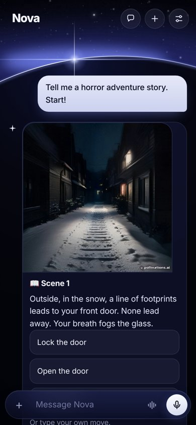

Ask out loud and Nova answers out loud. It tells you stories where you pick what happens, plays trivia with you, turns your photos into anime and cuts your clips into edits on the beat.
Download Nova, it’s freeTry it in your browser
Edit maker. Give Nova your clips and a song. It finds the beat and cuts your clips to it, with flashes and zooms on the hits. Plus photo glow-ups and fun voices: pirate, robot, grandma and more.
Bonus challenges. Finished today’s daily challenge? Keep going with bonus rounds that don’t touch your streak.
Story adventure. Pick a genre and choose what happens next, with a painting for every scene. Nova now remembers your stories and offers sequels.
Games, hum to beat and a home screen widget. Trivia duels, 20 Questions, Would You Rather, and a beat made from your humming.
I wanted an assistant I could actually talk to, that sounds good in English and Romanian, and doesn’t cost anything. So I started building one. Nova gets new things almost every week, and a lot of them come from comments on its TikTok.